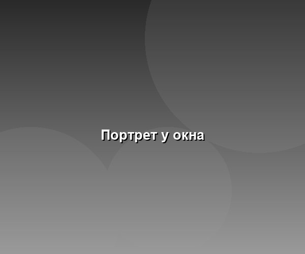
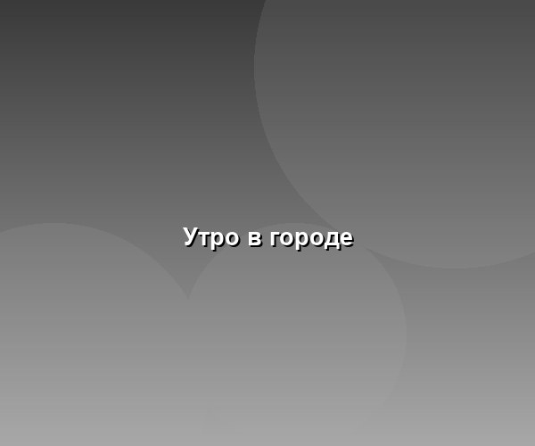
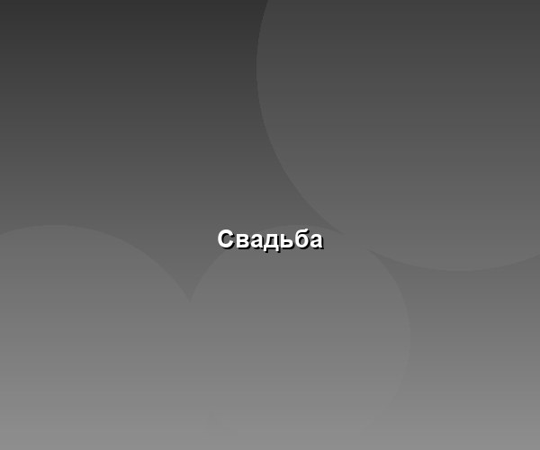
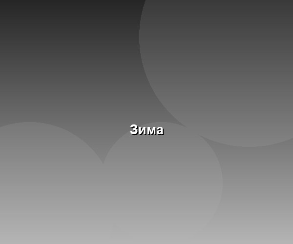
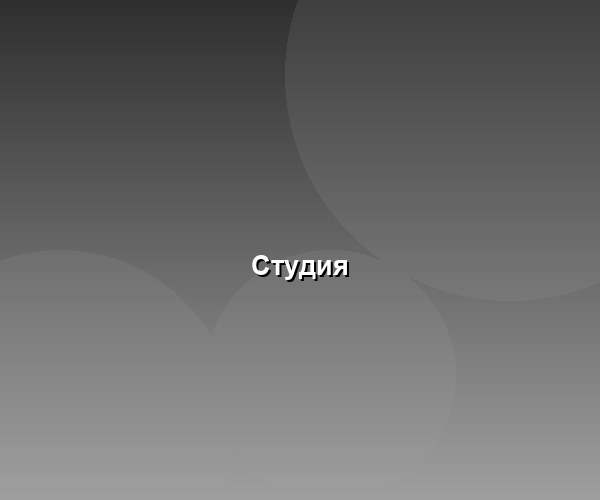
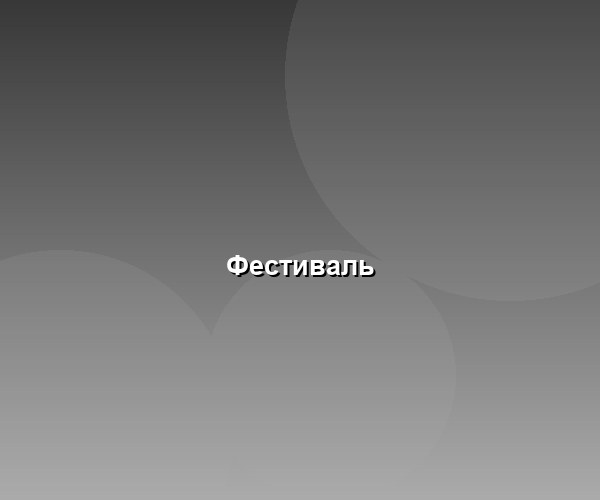
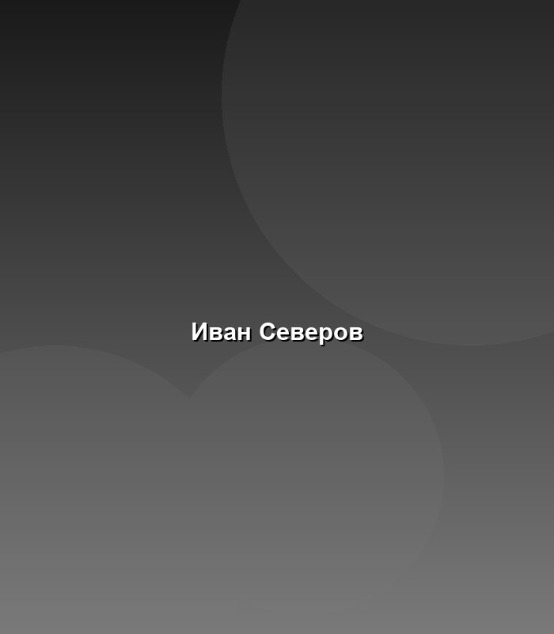

Портретная и репортажная съёмка. Санкт-Петербург, выезды по России.







Снимаю с 2015 года. Основные жанры — портрет, репортаж, городская съёмка. Публиковался в журналах «Город» и «Фотодело».
Индивидуальная съёмка — от 5 000 ₽, свадебный день — от 25 000 ₽. Готовые фотографии отдаю в течение 14 дней.
Обсудить съёмку